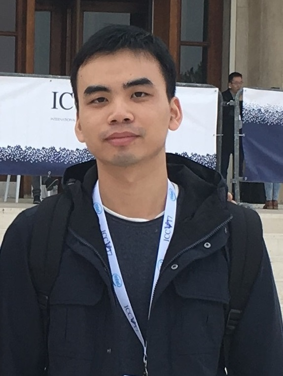

|  |
Bingbing Zhuang PhD Student Electrical and Computer Engineering National University of Singapore Email: zhuang.bingbing [at] u [dot] nus [dot] edu bbzhuang92 [at] gmail [dot] com [CV] |
Short Bio
I am currently a third-year PhD student in the ECE Department at National Univeristy of Singapore, advised by Prof. Loong Fah Cheong and Prof. Gim Hee Lee. Before, I obtained my Bachelor's degree in the EEIS Department at University of Science and Technology of China (USTC) in 2015.
Research Interest
3D Computer Vision in general, with emphasis on Sturcture from Motion and its applications to robotics and non-geometric vision.
Selected Publications

Baseline Desensitizing In Translation Averaging
Bingbing Zhuang, Loong Fah Cheong, Gim Hee Lee
IEEE Conference on Computer Vision and Patten Recognition (CVPR), 2018
[PDF]

Rolling-Shutter-Aware Differential SfM and Image Rectification
Bingbing Zhuang, Loong Fah Cheong, Gim Hee Lee
IEEE International Conference on Computer Vision (ICCV), 2017
[PDF][Supplementary][Dataset]